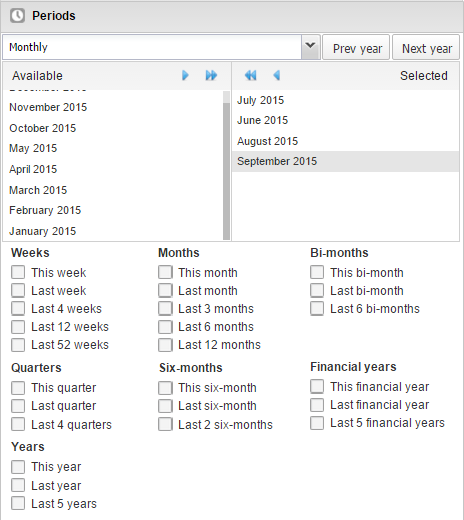
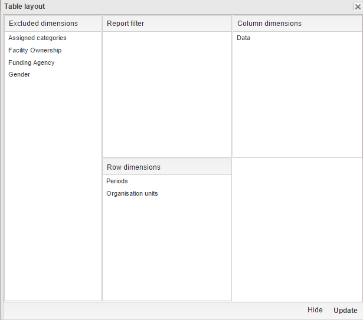

The workflow for creating a new pivot table is:
-
In the Apps menu, click Pivot Table.
The DHIS 2 Pivot Table window opens.
-
In the menu to the left, select the dimension items you want to analyse, for example data elements or indicators.
-
Click Layout and arrange the data dimensions as columns, rows and filters.
You can keep the default selection if you want.
-
Click Update.
A new pivot table based on your choices displays.
Example 15.1. Pivot table based on the demo database.
Notice how indicators are listed on columns and periods as rows.
 |
Related topics:
-
For more information about how you select dimension items, see .
-
For more information about the pivot table layout, see .
The left menu lists sections for all available data dimensions. From each section you can select any number of dimension items. As an example, you can open the section for data elements and select any number of data elements from the available list. You can select an item by marking it and clicking on the arrow in the section header or simply double-clicking on the item. Before you can use a data dimension in your pivot table you must at least select one dimension item. If you arrange a dimension as columns or rows but do not select any dimension items, the dimension is ignored.
At least one member of the data dimension is required for all pivot tables. The available types are:
-
Indicators
-
Data elements
-
Reporting rates
-
Event data items
-
Program indicators
You can combine these dimensions to display for example aggregate data with reporting rates, or event data items together with program indicators, all in the same pivot tables. For the "data element" data dimension, you are also able to select "Totals" and "Details", which will allow you to view different category combination options together on the same pivot table.
For the period dimension you can choose between using fixed periods or relative periods. An example of a fixed period is "January 2012". To select fixed periods start by selecting a period type from the period type list. You can then select periods from the list of available periods.
Relative periods are periods relative to the current date. Examples of relative periods are "Last month", "Last 12 months", "Last 5 years". Relative periods can be selected by ticking the check-boxes next to each period. The main advantage of using relative periods is that when you save a pivot table favorite, it will stay updated with the latest data as time goes by without the need for constantly updating it.
For the organisation unit dimension you can select any number of organisation units from the hierarchy. To select all organisation units below a specific parent organisation unit, right click and click "Select all children". To manually select multiple organisation units, click and hold the Ctrl button while clicking on organisation units. You can tick "User org unit", "User sub-units" or "User sub-x2-units" in order to dynamically insert the organisation unit or units associated with your user account. This is useful when you save a pivot table favorite and want to share it with other users, as the organisation units linked with the other user's account will be used when viewing the favorite.
|  |
Dynamic dimensions can consist of organisation unit group sets, data element group sets, or category option group sets which have been configured with the type of of "Disaggregation". Once the group sets have been configured, they will be come available in the pivot tables, and can be used as additional analysis dimensions, for instance to analyze aggregate data by Type of organisational unit or Implementing partner. Dynamic dimensions work the same as fixed dimensions.
![[Tip]](resources/images/admon/tip.png) | Tip |
|---|---|
|
Some dynamic dimensions may contain many members. This can cause issues with certain browsers due to the length of the URL when many dimension members are selected. A special "All" checkbox is available for dynamic dimensions, which allows you to include all available dimensions implicitly in your pivot table, without specifying each and every dimension member. |
After selecting data dimensions it is time to arrange your pivot table. Click "Layout" in the top menu to open the layout screen. In this screen you can position your data dimensions as table columns, rows or filters by clicking and dragging the dimensions from the dimensions list to the respective column, row and filter lists. You can set any number of dimensions in any of the lists. For instance, you can click on "Organisation units" and drag it to the row list in order to position the organisation unit dimension as table rows. Note that indicators, data elements and data set reporting rates are part of the common "Data" dimension and will be displayed together in the pivot table. For instance, after selecting indicators and data elements in the left menu, you can drag "Organisation Unit" from the available dimensions list to the row dimension list in order to arrange them as rows in the pivot table.
|  |
After you have set up your pivot table you can click "Update" to render your pivot table, or click "Hide" to hide the layout screen without any changes taking effect. Since we in our example have selected both the period and organisation unit dimension as rows, the pivot table will generate all combinations of the items in these dimensions and produce a table like this:
 |